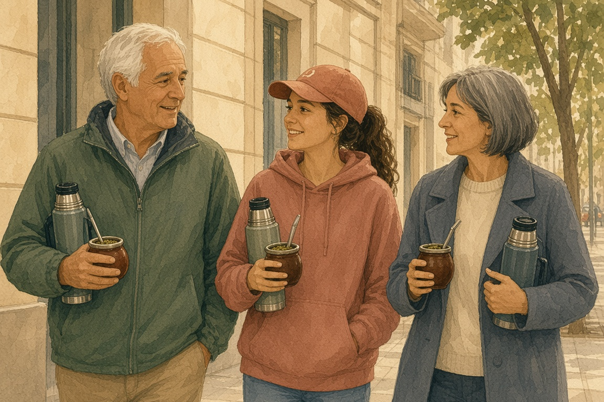

- B1
- El mate
El mate se comparte
En un balcón de Montevideo, «gracias» no cierra la visita: solo cierra la ronda.
Texto
La primera vez que tomé mate fue en un balcón de Montevideo. Sofía preparó una calabaza pequeña, puso yerba, agregó agua no muy caliente y probó ella primero. Después me pasó el mate, con la bombilla, un tubito de metal.
—Bébelo entero y devuélvemelo —dijo—. No muevas la bombilla. Y no digas «gracias» todavía. Me reí, porque en mi país «gracias» es lo primero que sale de la boca. El mate estaba un poco amargo, y también rico. Sofía explicó la regla: aquí, «gracias» significa «ya no quiero más». Mientras tanto, el mate va de mano en mano. Una sola persona, el cebador o la cebadora, sirve a todos. No es una taza para cada uno. Es la misma ronda, una y otra vez, mientras dura la conversación.
En Argentina y en Uruguay el mate no es solo una bebida. Es una manera de estar juntos, en casa, en la oficina o en un parque. En Uruguay es común ver a alguien caminar con un termo bajo el brazo, listo para cebar un mate en cualquier banco. Yo antes pensaba que cada persona toma su café y ya. Aquí el tiempo se alarga, el agua se comparte, y el silencio también es parte del rito. Nadie tiene prisa por terminar su taza y irse.
Esa tarde hablamos de trabajo, de familias y de nada importante. Al día siguiente, en la calle, vi a tres personas con su termo, como si la ronda pudiera seguir en movimiento. Cuando por fin dije «gracias», Sofía asintió y dejó de servirme. Me quedé un rato más, sin mate, y entendí el chiste secreto de esa palabra: no cierra la visita. Solo cierra la ronda.
